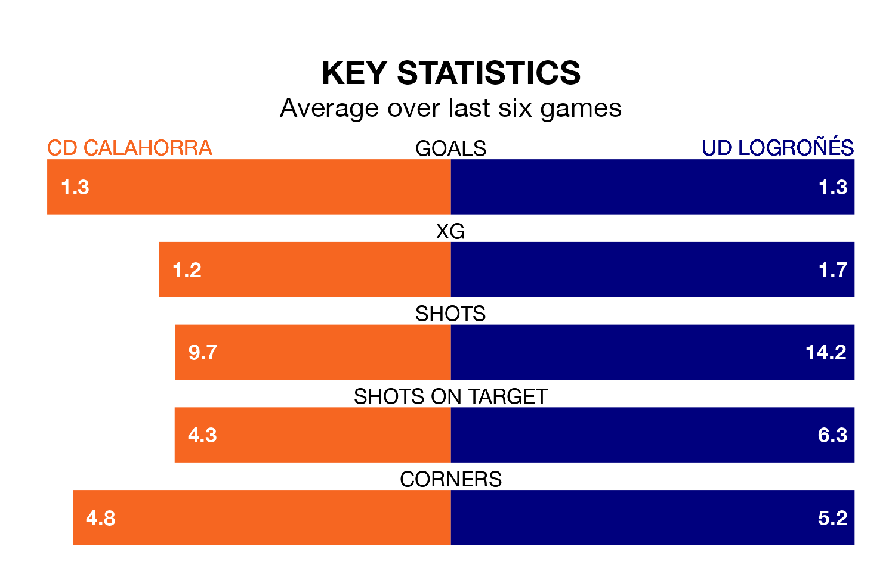

CD Calahorra host UD Logroñés on Sunday at the Estadio La Planilla in the Segunda División RFEF Group 2.
In their last league match, on March 17, Calahorra beat Brea 2-0 away, with goals from Eneko Capilla González and Iker Hernández Ezquerro.
Logroñés drew, 0-0 at home against Barakaldo CF.
With 54 goals in 27 games so far this season, Logroñés are the league's highest scorers with 2.0 goals per game. And they are conceding fewer than average, letting in 15 goals at a rate of 0.6 per game.
Calahorra, meanwhile, are below average scorers, with 0.9 goals per game, compared to a league average of 1.1. They have conceded 1.0 goal per game.
The away team are third in the table after 27 games, of which they have won 14 and drawn 10, earning 52 points.
The hosts are five places behind Logroñés in eighth, with 10 wins and seven draws putting them on 37 points.
In the last 10 years, Calahorra and Logroñés have played each other on 10 occasions. Calahorra won one of them, Logroñés two, and they drew seven times.
On average, Calahorra scored 0.4 goals and Logroñés 0.7 in those matches.
Their last meeting was on November 12, when Logroñés won 4-0 at home.
Calahorra are in reasonable form in the Segunda División RFEF Group 2, with three wins and two draws from their last six games.
With three wins and a draw over that period, Logroñés's form is slightly worse – they have taken 10 points from 18, compared to Calahorra's 11.
Updated: 10:19 (UTC), 22/03/24